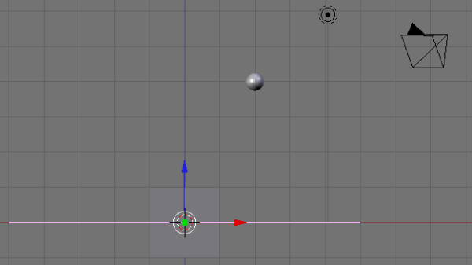
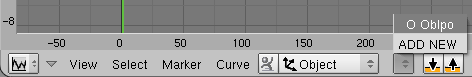
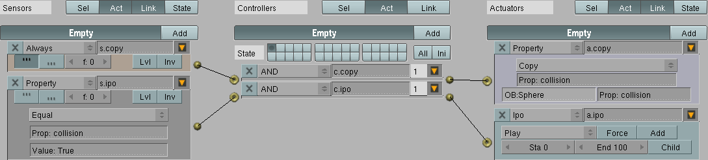

点击SR:2-Model，然后改变它为SR:1-Animation：

分离3D view窗口的右边为两个新的窗口
设置上面窗口为IPO Curve编辑器
设置下面的窗口为Text编辑器
移除Outliner窗口来增加3D view的空间，结果如下：

这是个复杂，高级的教程展现了使用Blender的游戏引擎和路径如何创建一个动画。一个球体会下落到一个平面上，沿着一个路径移动，然后掉到一个盒子里。
Blender可以记录基于物理的动作到一个对象的IPO。这个功能允许一个记录的物理序列被渲染作为一个动画。由于路径独立于物理来控制物理对象，路径运动没有特殊的干预不会被记录。所以让我们干预一下。
点击SR:2-Model，然后改变它为SR:1-Animation：
分离3D view窗口的右边为两个新的窗口
设置上面窗口为IPO Curve编辑器
设置下面的窗口为Text编辑器
移除Outliner窗口来增加3D view的空间，结果如下：
按下NUM-1切换到侧视图

Add>Curve>Path
按下g，y，2，然后Enter来往后移动Path
按下g，z，.25，然后Enter来向上移动Path
Transform>Mirror>X Local
按下NUM-7切换到顶视图
按下Tab来编辑Path
按下a取消选择所有的点
点击RMB来选择最后的点（最左边）
按下SHIFT-S，然后点击Selection->Cursor
按下g，z，1.5，然后Enter来向上移动最后的点
点击RMB来选择倒数第二的点
按下g，x，1，然后Enter对齐倒数第二个点和最后一个点
按下g，z，2，然后Enter向上移动倒数第二个点
按下SHIFT-S，然后点击Cursor->Selection
旋转场景，可以看到类似下面的视图：

复制粘贴下面的代码到Text窗口
# This script is used to map the IPO curve of an object as it travels
# through frames of an animation. The algorithm follows:
#
# 1. Calculate number of steps needed to animate at given framerate.
# 2. Get the selected object.
# 3. Duplicate the selected object (which will hold the generated IPO).
# 4. Reset the duplicate object.
# 5. Loop over the number of frames at the calculated framerate.
# 6. Set the active frame.
# 7. Position the duplicate object to the same place as the selected one.
# 8. Copy the selected object's location and rotation into the duplicate's IPO.
#
# Usage:
# (1) Select the object that follows a curve.
# (2) Load this script in Blender's Text window.
# (3) Move the mouse to the Text window.
# (4) Press Alt-p.
#
import Blender
from Blender import Object, Scene
framesPerSecond = Scene.GetCurrent().getRenderingContext().fps
firstFrame = 0
lastFrame = 100
stepsPerFrame = (lastFrame - firstFrame) / framesPerSecond
selected = Object.GetSelected()[0]
Object.Duplicate()
duplicate = Object.GetSelected()[0]
duplicate.clrParent()
duplicate.clearIpo()
for frame in range( firstFrame, lastFrame, stepsPerFrame ):
Blender.Set( 'curframe', frame )
duplicate.setMatrix( selected.getMatrix() )
duplicate.insertIpoKey( Object.LOC )
duplicate.insertIpoKey( Object.ROT )
改变脚本名字为copy-path.py
保存脚本为copy-path.py
点击RMB来选择Empty
将鼠标移动到Text窗口
按下Alt-p执行脚本
将鼠标移动到3D窗口
按下DEL，然后Enter删除Empty.001
点击RMB选择Empty
按下Alt-p
点击Clear Parent来移除Path为Empty的父对象
重置IPO为frame 0
在IPO窗口，设置Empty使用新创建的IPO数据块

点击RMB来选择Path
按下m，2，然后Enter将Path移动到另一层
按下F7为对象按钮
点击RMB来选择Empty
设置TimeOffset为180
当球体碰撞到碰面，下面的情况会发生：
逻辑看起来如下：

逻辑块表示Blender不断复制球体的collision属性到Empty的属性，并且以同样的名字。一旦collision属性设定为True，Empty被指示不断的重复它的IPO。仍然设定球体的父对象为Empty，恰当的时候移除父子关系，记录球体完整的IPO曲线。
设定sensors名字，从上到下为：
c.plane
c.time
c.start
c.record
c.stop
改变c.start和c.record的controller类型为Python
创建新的text在Text窗口
复制粘贴下面的代码到Text窗口：
# This script is used to record the IPO curve of an object as it is
# assaulted by the Game Physics engine. It should be executed automatically
# via Logic Blocks. The algorithm follows:
#
# 1. Get the object being controlled by physics.
# 2. Create a new IPO for recording the motion of that object.
# 3. Store the IPO curves for use by the frame recorder.
#
import Blender
# Get the name of the object being controlled by physics.
#
gameObject = GameLogic.getCurrentController().getOwner()
objectName = gameObject.getName()[2:]
# Create an IPO of type Object named 'Recorded IPO'.
#
blenderObject = Blender.Object.Get( objectName )
ipo = Blender.Ipo.New( 'Object', 'Recorded IPO' )
blenderObject.setIpo( ipo )
# Get the position of gameObject as IPO curves.
#
locx = ipo.addCurve( 'LocX' )
locy = ipo.addCurve( 'LocY' )
locz = ipo.addCurve( 'LocZ' )
# Keep a reference to the curves in a global variable. The variable
# (GameLogic.rec) is used by a script that records the position of the
# game Object per frame.
#
GameLogic.rec = [gameObject, locx, locy, locz]
改变脚本名字为record-ipo.py
保存脚本为record-ipo.py
创建一个text在Text窗口
复制粘贴下面的代码到Text窗口：
#
# This script is used to record the position of an object as it travels
# through each frame, independent of the Game Physics. If Blender is set
# to record Game Physics to IPO, toggle that menu item OFF. This is a
# replacement. The algorithm follows:
#
# 1. Get the object being controlled by physics.
# 2. Get the object's position (for a given frame).
# 3. Update the recorded curves (stored in the global variable GameLogic.rec).
#
import Blender
from Blender import Scene
gameObject = GameLogic.getCurrentController().getOwner()
position = gameObject.getPosition()
frame = gameObject.time * Scene.GetCurrent().getRenderingContext().fps
# Only try to update the curves if the variable has been initialised.
#
if hasattr( GameLogic, 'rec' ):
# Set the curves for the X, Y, and Z axis.
#
GameLogic.rec[1].addBezier( (frame, position[0]) )
GameLogic.rec[1].update()
GameLogic.rec[2].addBezier( (frame, position[1]) )
GameLogic.rec[2].update()
GameLogic.rec[3].addBezier( (frame, position[2]) )
GameLogic.rec[3].update()
设置Script值：c.start为record-ipo.py
设置Script值：c.record为record-frame.py
点击Add，在Actuators下面，五次
改变actuators类型，从上到下为：
Property
Parent
Property
Parent
Game
设置actuators的名字，从上到下为：
a.start.parent
a.parent.empty
a.stop.parent
a.parent.none
a.stop
从上到下：
设置Prop值为: to collision.
设置Value值为: to True.
设置OB值为: to Empty.
设置Prop值为: to collision.
设置Value值为: to False.
改变Set Parent为Remove Parent.
改变Start new game为Quit this game.
连接Sensors到Controllers再到Actuators